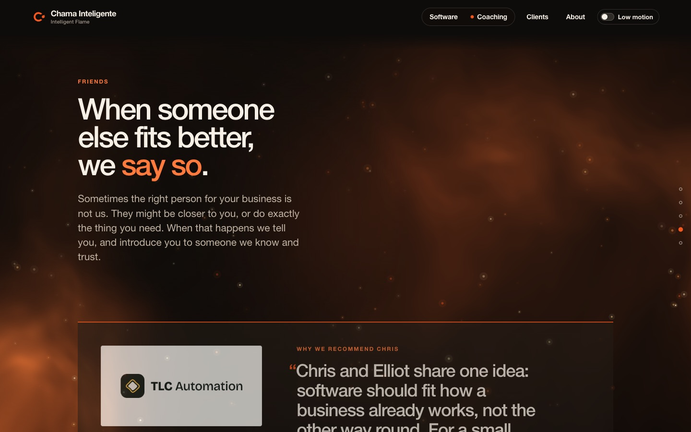
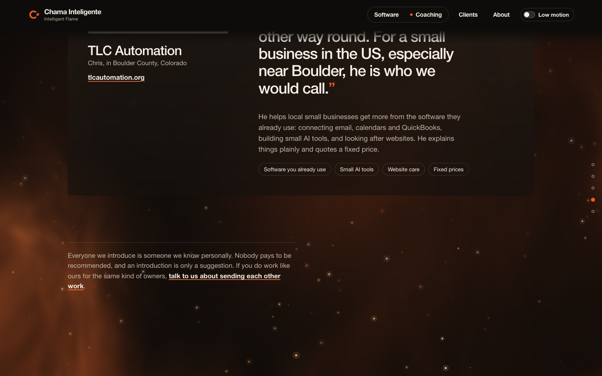
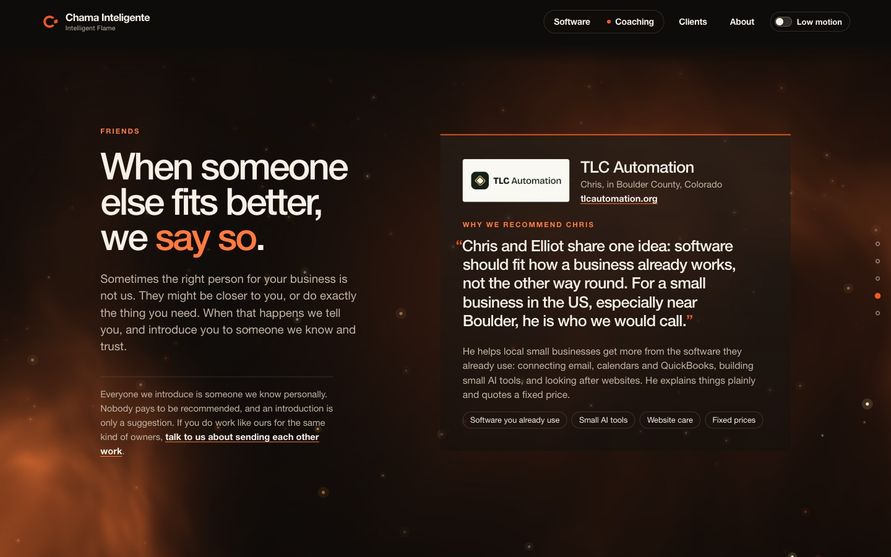
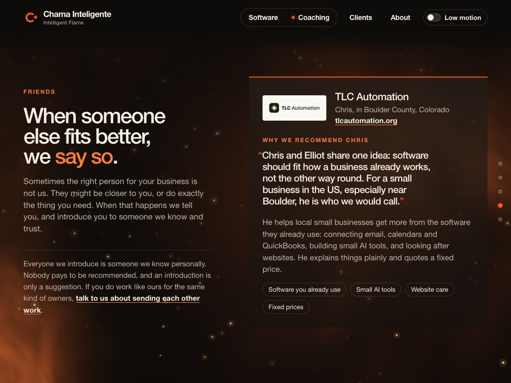

The Friends section was 1,677px tall on a 900px screen. Now it is exactly one screen: why we introduce people on the left, Chris's letter as a compact card on the right.
✓ Live in production✓ 1440, 1280 and 1024 wide: one screen✓ 547 checks passPhone: about 1.3 screens
Before: two screens of scrolling
Screen 1

Heading and intro, and the letter only starts at the bottom edge.
Screen 2

The rest of the letter, a big empty left column, then the note.
Now: one screen, live
1440 × 900, live on chamainteligente.com

Left: heading, intro, and the note about how we introduce people. Right: Chris's card with a small logo plate, the quote, what he does, and tags. New friends stack under Chris.
Smaller screens

1024 × 768 still fits in one screen. On a phone the card shows on the first screen, and the tags and note follow in a short scroll; fitting it all would mean cutting copy.